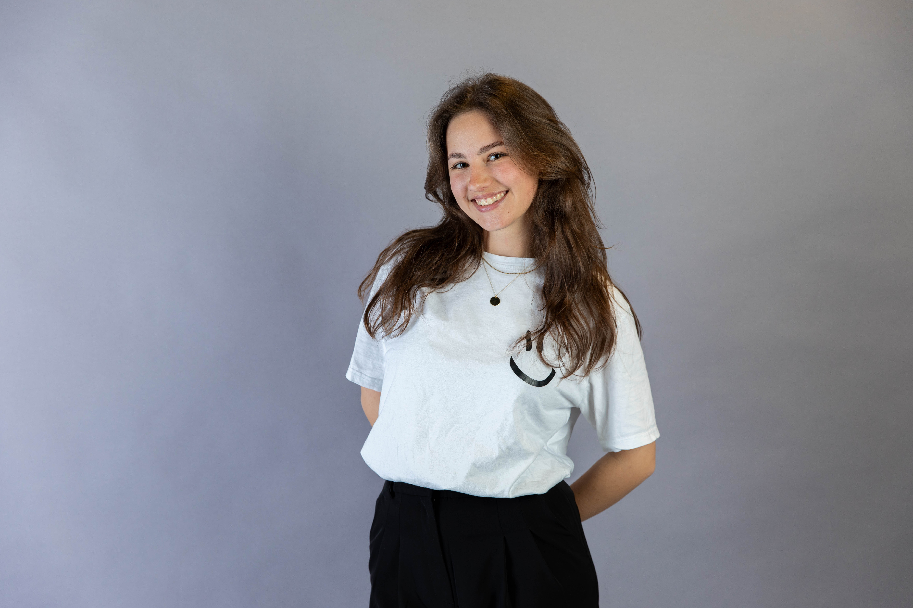

Videos, Magazine & Podcasts.
Konzeption, Storyboarding, audiovisuelle Umsetzung und redaktionelle Gestaltung für digitale und gedruckte Medien.

Dossier Profil
- Name:
- Veronika Dondl
- Schwerpunkte:
- Social Media, Video & Content
- Standort:
- Würzburg
- E-Mail:
- veronika.dondl@gmail.com
- Telefon:
- +49 176 54331093
Ausgewählte Arbeitsproben
Eingebundene YouTube-Videos, blätterbare Magazine sowie SoundCloud-Podcasts.

Video-Showcase I
Imagefilm Universidad de Málaga.

Video-Showcase II
Recap Uniprojekt Bangalore, Indien.
 Flipbook • Print
Flipbook • Print
Fotoreportage Rhön
Crossmediales 24-Stunden-Projekt: Magazin-Layout, Fotografie und begleitende Audiobeiträge.
Podcast THWS I
Recherche, Sprechertext und Schnitt.
Podcast THWS II
Recherche, Sprechertext und Schnitt.
Werdegang & Projekte
Berufserfahrung
Studentische Hilfskraft
März 2026 – September 2026THWS International Office
- Social Media / Content Creation
- Internationale Teamarbeit mit 8 europäischen Partnerhochschulen
- Erstellung von PowerPoint-Präsentationen
- Unterstützung der Kommunikationsarbeit im International Office
Marketing Praktikantin
September 2024 – Februar 2025Sport Conrad GmbH
- Content Management
- Eventmanagement
- Social Media
- Reporting und Kommunikation (B2B)
Studentische Hilfskraft
Mai 2023 – März 2024Hochschulmedienzentrum THWS
- Mediale Projektbegleitung von Studierenden
- Betreuung der Website
- Unterstützung bei der Organisation und Ausleihe der Technik
Bildungsweg
Bachelor Medienmanagement (1,6)
2022 – 2026Technische Hochschule Würzburg-Schweinfurt (THWS)
Bachelor Deutsch als Zweit- und Fremdsprache (ohne Abschluss)
2022Orientierungsstudium
Abitur (1,8)
2013 – 2021Projekt-Highlights
Málaga, Spanien
Imagefilm Universidad de Málaga, mediale Begleitung der Hochschulleitung.
Bangalore, Indien
Immersives Medienprojekt, Fotografie, Social Media (@mmadventuretours).
Customer Communications Day
Konzeption und Produktion des offiziellen Event-Trailers für Paragon GmbH.
Cross-Media: Rhön
Videoproduktion, Audio- und Radioproduktion, Konzeption und Gestaltung einer Fotoreportage.